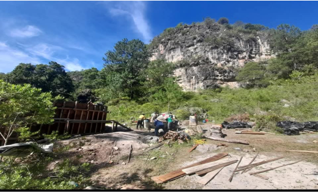
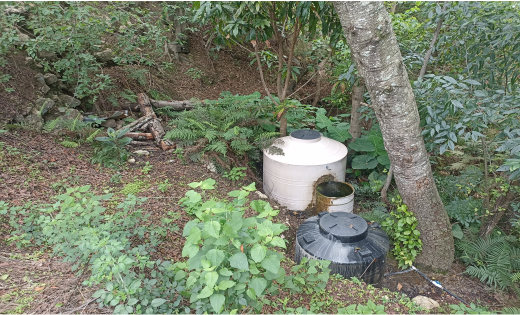
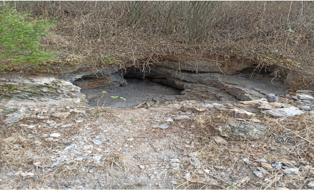

|
| |
| Historia Ubicacion Contacto Curiosidades galeria | San Isidrotiene un dato interesante y es que la mayoria del pueblo esta sobre una piedra gigante.
 Ojos de aguaen la comunidad de San Isidro, esta comunidad cuenta con demasiados lugares donde nace el agua por lo tanto la comunidad no sufre de este recurso  Minas de arenilla algo muy interesante de nuestra comunidad es que contamos con estas minas que se utiliza para hacer el barro y realizar la alfareria |